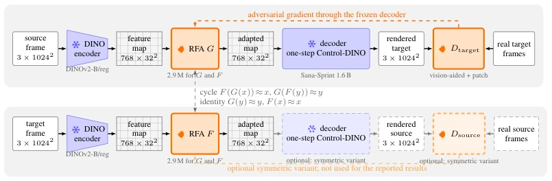
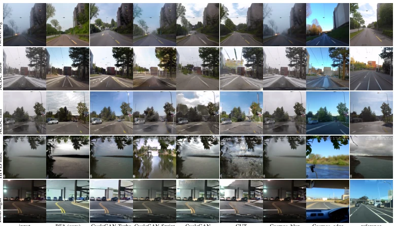
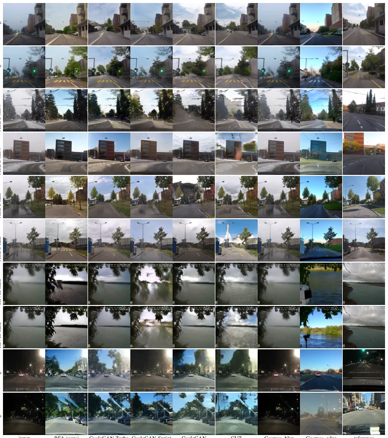
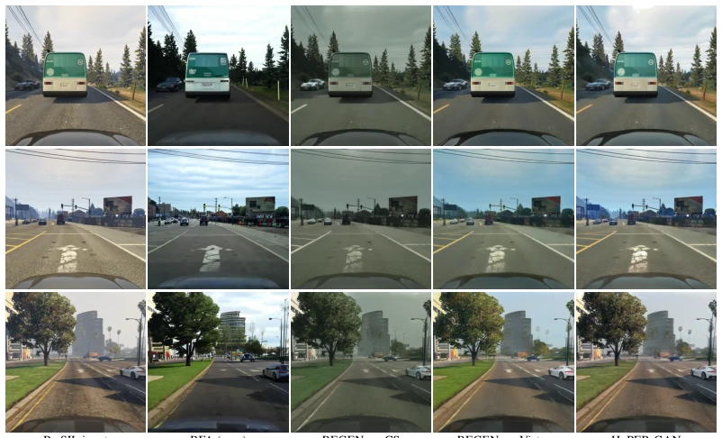
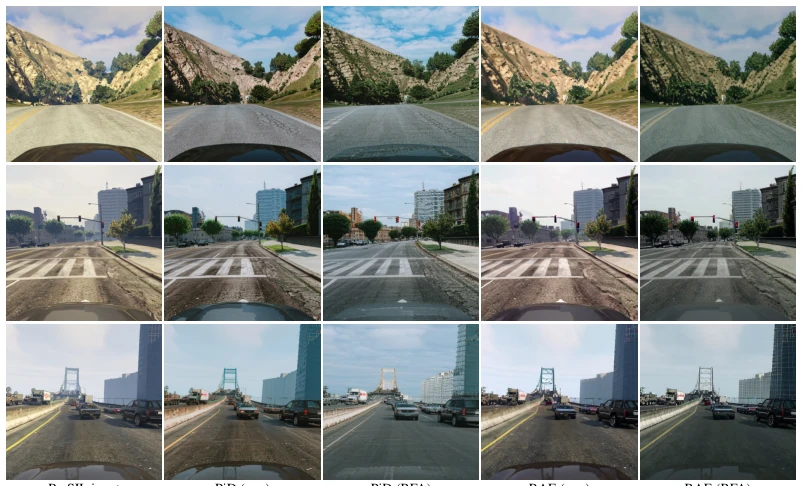
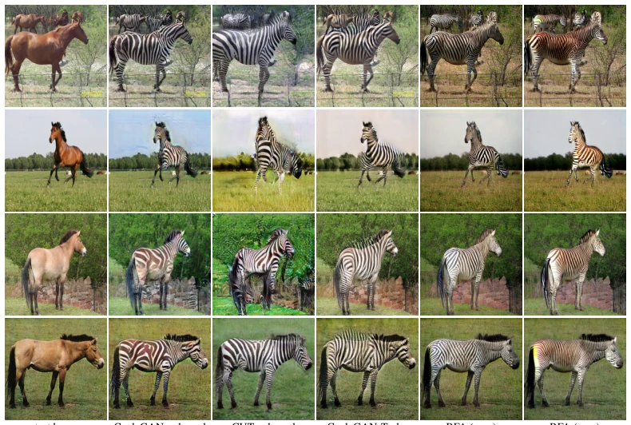
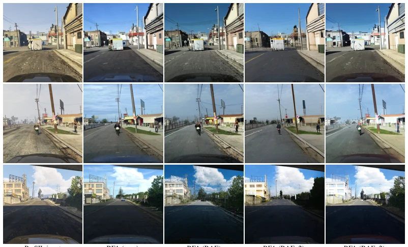
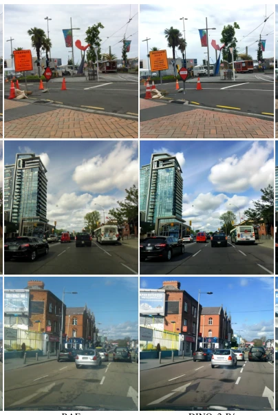
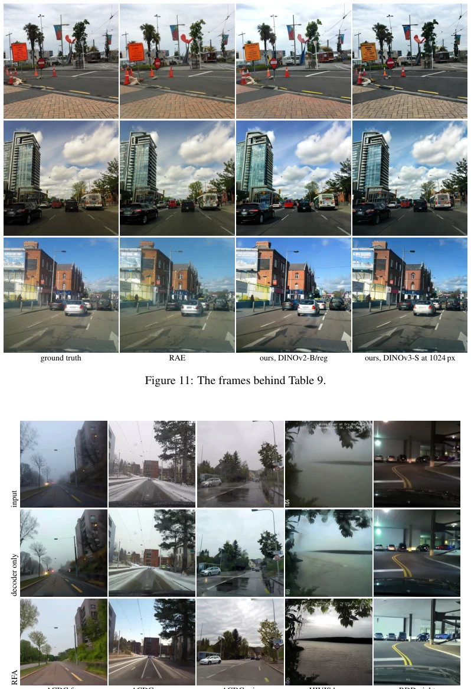

This paper treats "domain" as "residual" on feature maps, which is quite interesting. Pixel-level generators (such as CycleGAN) always tend to carry source domain features over; the author directly freezes the generator and trains only a 2.9M adapter to erase this 13% residual. Although it saves 160 times the parameters and training is 5 times faster, the cost is that scene structure will drift. It is like wiping away rain traces but also wiping away the headlights. However, for Sim-to-real and de-hazing, it is indeed superior to CycleGAN-Turbo. It demonstrates that feature space is more suitable for domain adaptation than VAE latent space, because VAE latent space is too invertible, and the adapter can only perform global color tuning. The drawback is poor structural consistency, and the lack of temporal modeling, which may cause flickering in videos. Overall, this is a "small but beautiful" attempt, using feature residuals to replace pixel generation; although it sacrifices some geometric fidelity, it gains extremely high efficiency and specific domain removal capabilities.
研究动机Motivation
无配对翻译器（如 CycleGAN, CUT）因为生成器能看到输入，所以总保留源域外观。去雾、转照片需要源域消失但场景保留。现有方法要么保留湿痕（CycleGAN-Turbo），要么重绘场景（Cosmos-Transfer）。需要一种能分离结构和外观的方法。像素空间 GAN 必须学习生成，扩散微调（如 CycleGAN-Turbo）也受限于输入可见性。几何控制（深度/边缘）只捕捉狭窄方面。DINO 特征图固定场景内容，天气光照仅作为残差存在。因此训练一个适配器移动残差，冻结解码器，能避免生成器恢复源域的问题。
Unpaired translators (such as CycleGAN, CUT) retain source domain appearance because the generator can see the input. De-hazing and photo-to-photo require the source domain to vanish while the scene is retained. Existing methods either retain wet traces (CycleGAN-Turbo) or redraw the scene (Cosmos-Transfer). A method capable of separating structure and appearance is required. Pixel space GAN must learn generation, and diffusion fine-tuning (such as CycleGAN-Turbo) is also limited by input visibility. Geometric control (depth/edges) only captures narrow aspects. DINO feature maps fix scene content, with weather and lighting existing only as residuals. Therefore, training an adapter to move residuals and freezing the decoder can avoid the problem of the generator restoring the source domain.
The overall pipeline is one-way. The input image is mapped to a feature map via the DINO encoder, the RFA adapter modifies the feature map, the frozen ControlNet decoder renders the image, and the discriminator evaluates. The adapter is a 2.9M parameter feed-forward network, with zero initialization ensuring an initial identity mapping. During training, only the adapter and discriminator are optimized, while the encoder and decoder are frozen. The loss functions include feature space cycle consistency and identity terms, as well as adversarial loss on the decoded images. The discriminator adopts a combination of Vision-aided and PatchGAN. Gradients backpropagate through the frozen decoder, forcing the adapter to learn residuals.
Datasets include ACDC (fog/snow/rain), BDD100K (night-to-day), PreSIL (Sim-to-real). Evaluation metrics include KID, FID, and DINO structural distance. RFA leads CycleGAN-Turbo on fog and night KID, with the best rain removal effect. It leads REGEN and HyPER-GAN on Sim-to-real tasks. However, structural distance shows scene structure drift. Ablation experiments show the adapter fails on VAE latent space. Portability tests show PiD and RAE decoders can render RFA output, proving feature effectiveness.
其他图片Other Figures

Figure 1: Training is one-sided by default. Top row: the frozen encoder maps the frame to a feature map, G adapts it, the frozen decoder renders it, and the target discriminators judge the render against real frames, their gradient reaching G through the decoder. Bottom row: F maps target features back and learns only from the cycle and identity terms. Dashed: the symmetric variant (Section 4.3). At inference only the top row runs, with the decoder at two steps.

Figure 2: The weather benchmark (Table 2). Last column: the paired clear frame where ACDC has one, else a target frame. On rain the wet sheen survives every pixel-fed method but Cosmos- Transfer’s edge control, which redraws the scene, and only the RFA removes the rain while keeping the scene. CycleGAN-Turbo is our training with its released recipe per condition, except haze (the released module of Henein et al. (2026)) and night (the released night-to-day model).

Figure 5: The weather benchmark on two further frames per condition, none of them the frames of Figure 2; columns and references as there.

Figure 6: Sim-to-real on three further matched crops. The pixel-fed GANs keep identity and change appearance; the RFA changes what the features leave free.

Figure 7: Portability on three further PreSIL frames: PiD and RAE decoding raw features and the same features after the sim-to-real RFA.

Figure 8: Horse →zebra, four test horses: the released CycleGAN and CUT models, CycleGAN- Turbo trained with the authors’ recipe. The two RFA runs compare the default recipe with training without the patch discriminator.

Figure 10: One adapter recipe, four frozen decoders (Table 10). The scene survives in all four; what differs is fine content and how much of the layout moves. Decoders render at 1024, 512 and 256 px, printed at one size.

Figure 11: The frames behind Table 9.

Figure 12: Decoder bias, the frames of Figure 2. Decoder only is the frozen decoder on the un- adapted features. The weather, and the night, come back in every decoder-only frame, so the re- moval in the RFA row is the adapter’s.